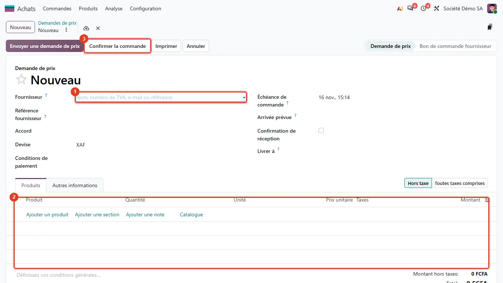

Émettre un bon de commande et créer les articles
Objectif. Passer une commande d'achat et la rapprocher ensuite de la facture du fournisseur.
Menu Odoo 15Achats > Commandes > Demandes de prix
Étapes
- Cliquez sur Nouveau et choisissez le fournisseur (1).
- Ajoutez les articles (2) : quantité et prix. Créez l'article s'il n'existe pas (type, compte de charge, TVA).
- Envoyez la demande, puis cliquez sur Confirmer la commande (3).
- À réception de la facture, créez-la depuis la commande : Odoo reprend les lignes.

À vérifier
- La facture fournisseur reprend les quantités commandées et reçues.
À éviter
- Ne créez pas deux articles pour le même achat.
Exercice
Créez une commande de 2 articles et confirmez-la.